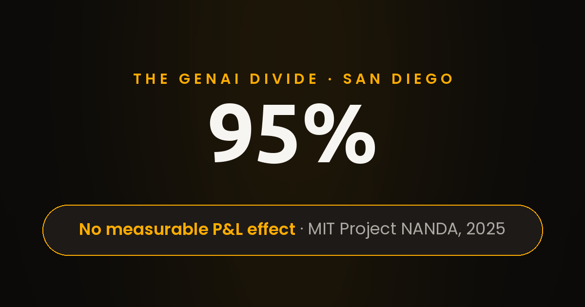

Vibe Coding Is Dead: Why San Diego Teams Still Hire Real Engineers
The neon on 5th Avenue buzzed louder than the traffic. It was a Friday night in the Gaslamp Quarter, and the crowd moved the way crowds move there, slow and shoulder to shoulder, past taco carts and rooftop bars spilling music onto the sidewalk. Near the corner, under a string of lights, a street magician had set up a small folding table with a velvet mat, a deck of cards, and a brass cup holding a red ball.
I stopped because everyone stops. The magician was good. From the cup, the ball vanished, reappeared behind a kid's ear, and vanished again. The crowd laughed and clapped while a few people dropped bills into the tip jar. For 3 minutes, it felt like genuine magic.
Then I noticed the small wooden box at the edge of the table, price tags stuck along its rim. Inside it sat the same cups, the same balls, and the same gimmicked decks, boxed and ready for anyone with $40 and a dream. Buy the trick, the box seemed to whisper, and the applause becomes yours too.
I walked away thinking about that box for the rest of the evening. By the time I reached the waterfront, the thought had hardened into a question I could not shake: if owning the trick made anyone a magician, why would the magician sell it for $40?
The next morning I carried that question to Balboa Park. A thin marine layer was burning off the lawns, joggers circled the paths, and the whole city looked scrubbed clean in the early light. I sat on a bench near the botanical building and watched a grounds crew trim hedges with the practiced ease of people who have done the same work for 10 years.
Nobody applauds a well-trimmed hedge, and nobody films it for a social feed. Yet the park does not run on applause. It runs on people who know their craft.
That contrast followed me home and refused to leave. On the near side of the mental ledger sat the magician's table: instant wonder, 3 minutes of applause, a $40 box. Across the ledger sat the grounds crew: invisible mastery, 10 years of mornings, a park that works. And somewhere between those 2 images, a parallel clicked into place about the software industry I work in. San Diego keeps teaching me the same lesson in different costumes, and this time the costume was called vibe coding.
Here is the analogy, stated plainly. A magic shop sells wonder by the box. The transaction feels like empowerment and functions like a souvenir. You walk in curious, you walk out with a gimmicked deck and a head full of applause, and for an evening you feel like a magician. But feeling like a magician never made anyone a magician. The seller knows this better than anyone: the trick works as a 3-minute demo under controlled lights, and it was never meant to survive a real stage.
There is a famous stage duo, Penn and Teller, whose whole act rests on a brutal standard. Amateur magicians line up to perform for them, and a performer earns real respect only by fooling 2 experts who know every trick in the book. That bar exists because the difference between a trick and a craft is the difference between knowing the secret and surviving the audience. The shop sells the secret, but the stage demands the craft.
Vibe coding is the magic shop of AI software development. It arrived with a beautiful promise: describe the app in plain language, watch the code pour out, ship by Friday. The demos look incredible, and the generated screens glow. And underneath, very often, there is no real backend, no data model that survives contact with actual users, no architecture that a team can extend 6 months later. What you bought was the 3-minute demo, not the craft.
Scroll through any feed right now and you will see the flood: playable game demos, cloned apps, and dashboards, all generated from a prompt and presented as finished products. They look remarkable in a 60-second clip. Meanwhile, almost nobody sells the underlying product, because in most cases there is no underlying product to sell. What exists is a polished surface with an empty room behind it, and the empty room is where custom software development actually lives or dies.
Drive 20 minutes north and the contrast sharpens. In Sorrento Valley, startups ship real backend systems out of low-slung buildings with no neon at all. Their demos are boring on purpose: dashboards, passing test suites, deploy logs. Nobody films a passing test suite, yet those suites are what let a team hire software engineers with confidence and promise customers a system that survives Monday morning. Vibe coding has nothing to say to that room, because that room measures outcomes, not applause.
So I will say the quiet part directly, as my own opinion formed over 2 years of watching this cycle: vibe coding is dead because it was never alive. It was marketing for selling dreams, dressed up as a revolution in how software gets built. The dream was lovely, but the balance sheet, as we are about to see, tells a different story. That is also why teams at RISEUP ASIA LLC still start every engagement with written scope instead of a prompt.
Start with the numbers, because the numbers stopped being polite a while ago. Research from MIT's Project NANDA, published as The GenAI Divide, reviewed more than 300 public AI initiatives, ran 52 structured interviews, and surveyed 153 senior leaders. The finding: 95% of integrated generative-AI pilots showed no measurable effect on profit and loss, while only 5% were extracting measurable P&L value. Read that again slowly. Out of every 20 pilots, 19 produced polished demos and 1 produced a return. The report even found that employees at more than 90% of surveyed companies were already getting value from personal AI tools on their own, while the official pilots, the expensive ones, stalled; the demos worked, yet the deployments did not. This is the empirical backdrop for every honest conversation about AI software development right now, and it is why serious teams still hire software engineers to do the unglamorous integration work that demos skip. MIT NANDA research behind the 95% figure
Then came Gartner's forecast, and it landed like the other shoe dropping. The firm predicted that more than 40% of agentic AI projects will be canceled by the end of 2027, citing escalating costs, unclear business value, and inadequate risk controls. Most of these projects, in the words of Gartner's own analyst, are early experiments driven by hype and frequently misapplied. The press release even names the quiet grift propping up the demo economy: agent washing, the rebranding of chatbots and automation tools as agentic AI, with Gartner estimating only about 130 of the many vendors as genuinely real. A January 2025 poll of 3,412 webinar attendees found only 19% had made significant investments while 31% were still waiting or unsure. For balance, Gartner still expects 33% of enterprise software to include agentic AI by 2028, so the technology is not vanishing; the fantasy is. The industry keeps applauding the trick while quietly declining to buy the box. Gartner forecast: 40% of agentic AI projects canceled
Vibe coding promised to delete the integration work. The data says the work deleted nothing and the bill arrived anyway. Only 5% of pilots succeeded, and they did not get there with better prompts; they got there with real software engineers doing systems work under real constraints. Custom software development has always been the discipline of surviving contact with production, and no demo has ever repealed that.
Look closer at the 5% that broke through, because their playbook is the whole argument in miniature. The successful teams started from a recurring business process, defined success before writing code, and designed for the entire transaction instead of the demo moment. They reported eliminating $2M to $10M per year in outsourced service work and cutting outside agency spending by roughly 30%, all without shrinking their internal teams. Mid-market performers went from pilot to production in about 90 days, while large enterprises typically needed 9 months or longer. Notice what made the difference: not better prompts, but better engineering discipline. The winners treated AI software development as systems work, assigned clear ownership, and measured outcomes against the original process. In other words, they did custom software development with AI in the loop, not instead of it. That is precisely what real software engineers are for, and it is why companies that hire software engineers for judgment, not just output, keep winning the long game.
Here is the question that ends the debate for me, and I have never heard a satisfying answer to it. The largest AI labs employ enormous engineering teams and pay them handsomely to build the very tools that supposedly replace engineering. If a tool can do the software engineering and save the cost, why don't they cut their own payroll? Think about that for a full minute. The companies selling the dream of engineer-free AI software development are themselves racing to hire software engineers at a historic pace. In my opinion, that tells you the product does not do what the marketing promises; the demo is the product. And it is why RISEUP ASIA LLC hires engineers instead of prompts. Penn and Teller would understand this instantly. Fool the experts or go home: that is the standard for the stage, and production software is the toughest audience in the world. A prompt never fooled it. Craft does, every day, in every deploy.
That contradiction is exactly why I keep pointing San Diego teams toward a different model. When you hire software engineers through a team that treats engineering as a craft, you get people who have survived real stages, not people who bought the trick. This is what real software engineers actually do at RISEUP ASIA LLC, where the work starts with written scope, visible milestones, and senior review before any handoff. The site states the economics bluntly: the cheapest developer can become the most expensive decision. I have watched that sentence age well.
Contrast that with the pitch for vibe coding. Its pitch sells the feeling of shipping, while the other side sells the shipping itself. Custom software development done properly is slow in exactly the ways that matter: requirements nailed down before code, tests before deploy, security review on every pull request. None of that fits in a 1-minute clip, which is precisely why the clip economy cannot price it. I have sat in both rooms. In the demo room, the energy is electric and the timeline is always by Friday. Inside the engineering room at RISEUP ASIA LLC, the energy is quieter: written scope before code, evaluation gates before release, cost-per-run budgets that keep AI features honest. The demo room sells excitement. Outcomes come from the 2nd room. Only 1 of them answers the phone at 2 AM.
Let me lay the 2 approaches side by side, because the differences are structural, not cosmetic.
- A generated demo peaks on recording day, while a system built by real software engineers keeps compounding as the team extends it. The trick impresses in 3 minutes; the craft survives for 3 years.
- Vibe coding renders the visible surface, whereas serious AI software development begins with the data model, the permissions, and the failure modes nobody can see. The trick hides the backend; the craft starts there.
- Applause rewards the trick, but maintenance rewards the craft. Every production system spends most of its life being changed, and custom software development budgets for that reality instead of pretending it away.
- Nobody owns the trick when it breaks at 2 AM, while teams that hire software engineers know exactly whose pager goes off. The trick needs no accountability; the craft assigns it by name.
- Another prompt makes a longer video, yet 1 more engineer with context makes a stronger product. The trick scales the demo; the craft scales the system.
If you want my personal ranking, here are the 4 clearest tells that a demo is empty, ordered by how fast they reveal themselves. At RISEUP ASIA LLC, these 4 tells are part of every technical review.
- The backend never appears on screen. If a demo shows no database, no API contract, and no auth flow, assume none exists, because real software engineers lead with those and magicians never do.
- Failure stories are conspicuously absent. Ask what happens when the input turns malicious or the network drops, and the presenter will change the subject. Custom software development always carries a failure story; a trick never does.
- Maintenance plans do not exist. A serious build ships with tests, logs, and a deploy pipeline, while vibe coding ships with a video file.
- Accountability has no name attached. Ask who maintains the system in year 2: honest teams name names, demo teams name features. Hire software engineers who answer with names.
I keep returning to that bench in Balboa Park. The grounds crew finished the hedges hours before the crowds arrived, and nobody noticed, which was exactly the point. Real craft is invisible when it works. Vibe coding is visible precisely because it never has to work. The trick needs an audience, while the craft needs only a standard.
San Diego taught me this long before software did. The city runs on UC San Diego labs, Sorrento Valley startups shipping real backend systems, and teams in La Jolla who scope carefully before they build. Walk the UC San Diego campus on a weekday and you will see the pipeline: students who debug for 6 hours to earn a green test suite, then graduate into teams that treat that discipline as the job itself. The city does not celebrate the trick; it funds the craft. None of them buy magic boxes. They hire software engineers, they fund AI software development with clear-eyed budgets, and they treat custom software development as the discipline it is.
Do you want the applause or the system? If you want the $40 box, the shop on 5th Avenue is open late. For the system that lasts, hire software engineers through RISEUP ASIA LLC and start with an honest scoping call. Real software engineers will tell you what the demo cannot: what it costs, what breaks, and what lasts. That conversation is worth more than every magic trick on 5th Avenue. San Diego will keep its neon, and the magician will keep the table. I will keep the bench in Balboa Park, watching people who mastered something real.
